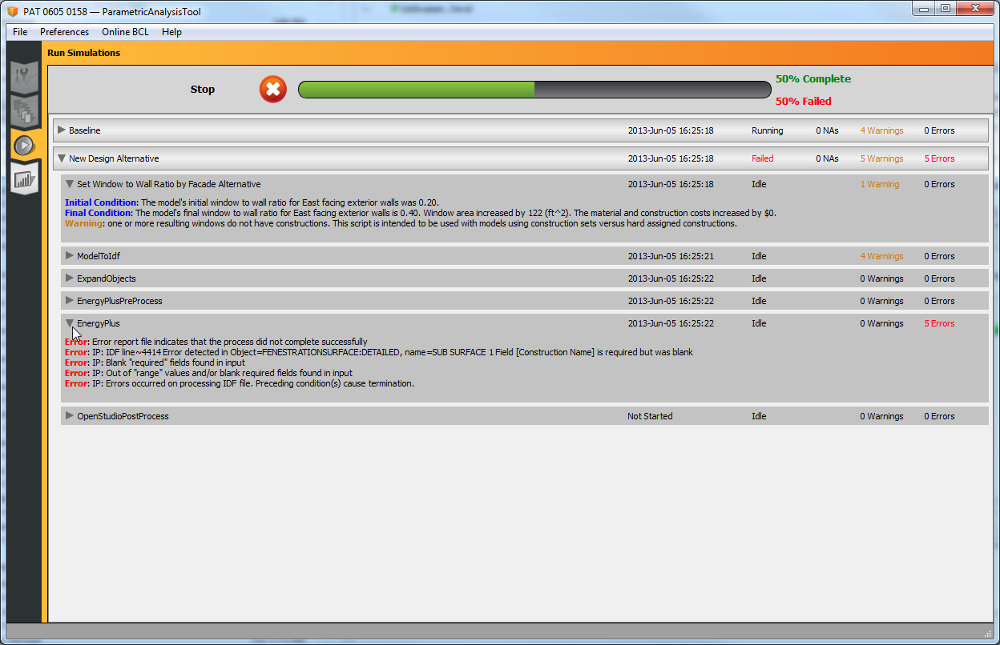

Troubleshooting
This page is a collection of troubleshooting advice that helps users deal with common issues.
Model Will Not Open in SketchUp Plug-in
If you have an OSM file that will not open, or opens incorrectly in the SketchUp Plug-in then running the user script linked in this thread can help identify the problem objects and create a new diagnostic copy of your file. This script creates a report identifying problem objects, and saves a new copy of your file leaving the original untouched. This script is installed with 0.6.2 or later, but you can manually download this file and use it with 0.6.0 or later. Some reasons you may need to run this script include:
- Trying to open an OSM file created from an outdated beta version of OpenStudio
- Through some form of editing, conflicting objects exist in the model that prevent it from opening correctly
- Hand-editing of the file results in invalid objects or objects missing necessary data
- Other forms of file corruption
Whatever the cause, this should help identify and fix the problems. You may have to do some repair or cleanup work on the resulting file, as some objects may be deleted.
To install user scripts, drop them in the following subdirectory of your OpenStudio installation and re-start SketchUp. Currently you can't nest them deeper than the user_scripts folder. They must be loose files in that directory for the OpenStudio SketchUp Plug-in to add them to the me
To install user scripts, drop them in the following subdirectory of your OpenStudio installation and re-start SketchUp. You cannot currently nest them deeper than the user_scripts folder. They must be loose files in that directory for the OpenStudio SketchUp Plug-in to add them to the menu.
OpenStudio 1.5.0\Ruby\openstudio\sketchup_plugin\user_scripts
To run the script, go to the "User Scripts" menu under the SketchUp Plugins menu, "Plugins / OpenStudio" menu and choose "OSM Diagnostic Script".
Right click on the link below and save to your computer vs. opening in web browser: OSM_Diagonstic_Script.rb
Model Will Not Run
Some of the reasons simulation errors occur are:
- EnergyPlus is not installed. You must have EnergyPlus installed to run a simulation.
- The version of EnergyPlus you are using is not compatible with the version of OpenStudio you are using. Check under the menu Preferences/Scan for tools to see what version of EnergyPlus you are using.
- If the weather file has not been set, the simulation will fail.
- Design days or sizing are required if you are simulating a full HVAC system instead of using idea air loads.
If you are in the OpenStudio application, the image below shows you how to get access to the "eplusout.err" file that lists the EnergyPlus errors. You can view it with a text editor.

If you are in PAT, you should be able to expand the view in the run tab to see errors and warnings at any stage. If errors do not show up in the run tab, there may be an issue with the weather or DDY files. See the image below.

SketchUp crashes on launch
The first thing to do is to remove SketchUp and install it again. To do this, run the SketchUp uninstaller. Also check that all OpenStudio plugins are removed from the SketchUp plugin directories. On Windows these directories are:
- C:\Users\<your username>\AppData\Roaming\SketchUp\SketchUp 2014\SketchUp\Plugins
- C:\ProgramData\SketchUp\SketchUp 2014\SketchUp\Plugins
- C:\Program Files (x86)\SketchUp\SketchUp 2014\SketchUp\Plugins
On Mac these are:
- /Users/<your username>/Library/Application Support/SketchUp 2014/SketchUp/Plugins
- /Library/Application Support/SketchUp 2014/SketchUp/Plugins
If SketchUp crashes without the OpenStudio plugins installed then something else is wrong, contact the SketchUp support team for help. If SketchUp launches, try installing OpenStudio again. If SketchUp crashes on launch again, remove the OpenStudio files from the SketchUp plugin directories again. Open SketchUp, go to Window->Preferences->Extensions and disable the OpenStudio plugin. Re-install OpenStudio and relaunch SketchUp. Open the Ruby console by going to Window->Ruby Console and then go back to Window->Preferences->Extensions and enable the OpenStudio plugin, you may see useful output in the Ruby console. If you have other extensions installed, try disabling them and enabling the OpenStudio plugin.
If none of the steps above work and you are on Windows, it is likely that there is a dynamic library being loaded from another application that is interfering with OpenStudio. If you just want to fix your problem, try copying the files libeay32.dll and ssleay32.dll from C:\Program Files (x86)\OpenStudio X.X.X\bin to C:\Program Files (x86)\SketchUp\SketchUp 2014, this will fix the problem 80% of the time.
If you want to investigate in more depth, download Dependency Walker. Extract the files and launch depends.exe. Navigate to File->Open and then browse to choose the SketchUp.exe under C:\Program Files (x86)\SketchUp\SketchUp 2014. This will examine all of the libraries loaded by SketchUp but not the libraries loaded by OpenStudio. Navigate to Profile->Start Profiling then press Ok in the dialog that pops up. This will launch SketchUp and attempt to load OpenStudio. Scroll down in the list of loaded libraries and look for the OpenStudio dlls. Expand the paths under the OpenStudio dlls and look for libraries that are being loaded from other locations. Often, some other program will install a different version of one of the libraries (usually libeay32.dll or ssleay32.dll) that OpenStudio uses. This other library will be in the path ahead of OpenStudio and will be loaded instead, this results in a hard crash of SketchUp. Correcting your path or copying the dlls from the OpenStudio bin directory into the SketchUp install directory will cause the correct dlls to be loaded when SketchUp starts.
Unable to Communicate with Amazon Cloud from Command Prompt Using the "bundle" Command
This issue is typically a communication error between you and RubyGems.org. A few things to check:
- Are you behind a proxy? If so, then check if the proxy is applied system wide or just for your web browsers. It is typically easiest to open up your favorite browser and check the settings.
- Are there any website restrictions at your location? If so, then it is possible that your IT department is blocking access. Note that RubyGems is only the first hurdle, you will also need access to AWS (meaning Amazon).
If you think that the above is happening, then it is best to talk to your IT department and explain the situation. The general explanation for the "situation" is that you are trying to run a large number of simulations using Amazon Web Services. Some good questions may be:
- How can I access the internet through a command line (or terminal) using our company's proxy?
- When I ping aws.amazon.com, it times out; is there something that may be restricting access to the site?
- Can we set the proxy to be machine wide, instead of just on the web browsers?
Energy Modeling Forum
Post your questions to the forum below for energy modeling information. Unmet Hours
Submit a Bug
Please let us know if you find a bug in the OpenStudio software.